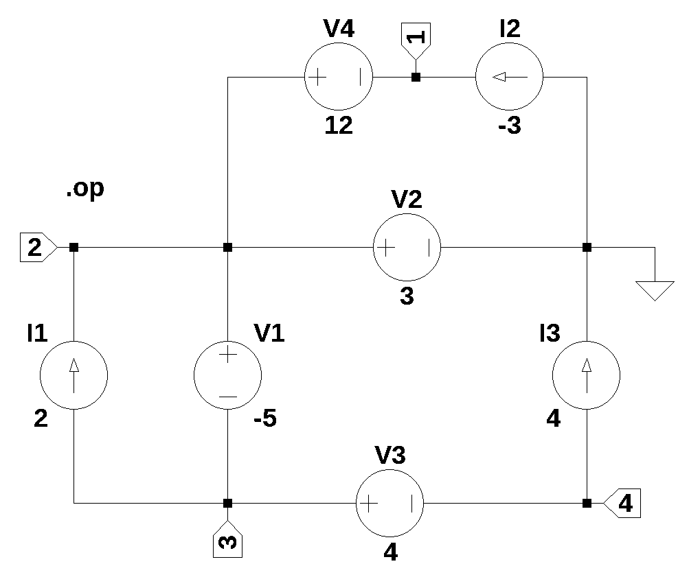

import os
from sympy import *
import numpy as np
from tabulate import tabulate
from scipy import signal
import matplotlib.pyplot as plt
import pandas as pd
import SymMNA
from IPython.display import display, Markdown, Math, Latex
init_printing()14 Test 10
Figure 14.1, contains independednt current and voltage sources in series and parallel. The circuit is from Hayt and Kemmerly (1978) (problem 34, Figure 2-51, page 65). This test examines a network with only sources.
a) Find the power supplied by the -5V source
b) To what value should the 4A source be changed to reduce the supply supplied by the -5V source to zero?

The net list for the circuit was generated by LTSpice and show below:
I1 3 2 2
I2 0 1 -3
I3 4 0 4
V1 2 3 -5
V2 2 0 3
V3 3 4 4
V4 2 1 1214.1 Load the net list
net_list = '''
I1 3 2 2
I2 0 1 -3
I3 4 0 4
V1 2 3 -5
V2 2 0 3
V3 3 4 4
V4 2 1 12
'''14.2 Call the symbolic modified nodal analysis function
report, network_df, i_unk_df, A, X, Z = SymMNA.smna(net_list)Display the equations
# reform X and Z into Matrix type for printing
Xp = Matrix(X)
Zp = Matrix(Z)
temp = ''
for i in range(len(X)):
temp += '${:s}$<br>'.format(latex(Eq((A*Xp)[i:i+1][0],Zp[i])))
Markdown(temp)\(- I_{V4} = I_{2}\)
\(I_{V1} + I_{V2} + I_{V4} = I_{1}\)
\(- I_{V1} + I_{V3} = - I_{1}\)
\(- I_{V3} = - I_{3}\)
\(v_{2} - v_{3} = V_{1}\)
\(v_{2} = V_{2}\)
\(v_{3} - v_{4} = V_{3}\)
\(- v_{1} + v_{2} = V_{4}\)
14.2.1 Netlist statistics
print(report)Net list report
number of lines in netlist: 7
number of branches: 7
number of nodes: 4
number of unknown currents: 4
number of RLC (passive components): 0
number of inductors: 0
number of independent voltage sources: 4
number of independent current sources: 3
number of Op Amps: 0
number of E - VCVS: 0
number of G - VCCS: 0
number of F - CCCS: 0
number of H - CCVS: 0
number of K - Coupled inductors: 0
14.2.2 Connectivity Matrix
A\(\displaystyle \left[\begin{matrix}0 & 0 & 0 & 0 & 0 & 0 & 0 & -1\\0 & 0 & 0 & 0 & 1 & 1 & 0 & 1\\0 & 0 & 0 & 0 & -1 & 0 & 1 & 0\\0 & 0 & 0 & 0 & 0 & 0 & -1 & 0\\0 & 1 & -1 & 0 & 0 & 0 & 0 & 0\\0 & 1 & 0 & 0 & 0 & 0 & 0 & 0\\0 & 0 & 1 & -1 & 0 & 0 & 0 & 0\\-1 & 1 & 0 & 0 & 0 & 0 & 0 & 0\end{matrix}\right]\)
14.2.3 Unknown voltages and currents
X\(\displaystyle \left[ v_{1}, \ v_{2}, \ v_{3}, \ v_{4}, \ I_{V1}, \ I_{V2}, \ I_{V3}, \ I_{V4}\right]\)
14.2.4 Known voltages and currents
Z\(\displaystyle \left[ I_{2}, \ I_{1}, \ - I_{1}, \ - I_{3}, \ V_{1}, \ V_{2}, \ V_{3}, \ V_{4}\right]\)
14.2.5 Network dataframe
network_df| element | p node | n node | cp node | cn node | Vout | value | Vname | Lname1 | Lname2 | |
|---|---|---|---|---|---|---|---|---|---|---|
| 0 | V1 | 2 | 3 | NaN | NaN | NaN | -5.0 | NaN | NaN | NaN |
| 1 | V2 | 2 | 0 | NaN | NaN | NaN | 3.0 | NaN | NaN | NaN |
| 2 | V3 | 3 | 4 | NaN | NaN | NaN | 4.0 | NaN | NaN | NaN |
| 3 | V4 | 2 | 1 | NaN | NaN | NaN | 12.0 | NaN | NaN | NaN |
| 4 | I1 | 3 | 2 | NaN | NaN | NaN | 2.0 | NaN | NaN | NaN |
| 5 | I2 | 0 | 1 | NaN | NaN | NaN | -3.0 | NaN | NaN | NaN |
| 6 | I3 | 4 | 0 | NaN | NaN | NaN | 4.0 | NaN | NaN | NaN |
14.2.6 Unknown current dataframe
i_unk_df| element | p node | n node | |
|---|---|---|---|
| 0 | V1 | 2 | 3 |
| 1 | V2 | 2 | 0 |
| 2 | V3 | 3 | 4 |
| 3 | V4 | 2 | 1 |
14.2.7 Build the network equations
# Put matrices into SymPy
X = Matrix(X)
Z = Matrix(Z)
NE_sym = Eq(A*X,Z)Turn the free symbols into SymPy variables.
var(str(NE_sym.free_symbols).replace('{','').replace('}',''))\(\displaystyle \left( I_{V4}, \ I_{1}, \ V_{2}, \ I_{2}, \ V_{1}, \ I_{3}, \ v_{2}, \ I_{V1}, \ v_{3}, \ V_{3}, \ V_{4}, \ I_{V2}, \ v_{1}, \ I_{V3}, \ v_{4}\right)\)
14.3 Symbolic solution
U_sym = solve(NE_sym,X)Display the symbolic solution
temp = ''
for i in U_sym.keys():
temp += '${:s} = {:s}$<br>'.format(latex(i),latex(U_sym[i]))
Markdown(temp)\(I_{V1} = I_{1} + I_{3}\)
\(I_{V2} = I_{2} - I_{3}\)
\(I_{V3} = I_{3}\)
\(I_{V4} = - I_{2}\)
\(v_{1} = V_{2} - V_{4}\)
\(v_{2} = V_{2}\)
\(v_{3} = - V_{1} + V_{2}\)
\(v_{4} = - V_{1} + V_{2} - V_{3}\)
14.4 Construct a dictionary of element values
element_values = SymMNA.get_part_values(network_df)
# display the component values
for k,v in element_values.items():
print('{:s} = {:s}'.format(str(k), str(v)))V1 = -5.0
V2 = 3.0
V3 = 4.0
V4 = 12.0
I1 = 2.0
I2 = -3.0
I3 = 4.014.5 Numerical solution
NE = NE_sym.subs(element_values)Display the equations with numeric values.
temp = ''
for i in range(shape(NE.lhs)[0]):
temp += '${:s} = {:s}$<br>'.format(latex(NE.rhs[i]),latex(NE.lhs[i]))
Markdown(temp)\(-3.0 = - I_{V4}\)
\(2.0 = I_{V1} + I_{V2} + I_{V4}\)
\(-2.0 = - I_{V1} + I_{V3}\)
\(-4.0 = - I_{V3}\)
\(-5.0 = v_{2} - v_{3}\)
\(3.0 = v_{2}\)
\(4.0 = v_{3} - v_{4}\)
\(12.0 = - v_{1} + v_{2}\)
Solve for voltages and currents.
U = solve(NE,X)Display the numerical solution
Six significant digits are displayed so that results can be compared to LTSpice.
table_header = ['unknown', 'mag']
table_row = []
for name, value in U.items():
table_row.append([str(name),float(value)])
print(tabulate(table_row, headers=table_header,colalign = ('left','decimal'),tablefmt="simple",floatfmt=('5s','.6f')))unknown mag
--------- ---------
I_V1 6.000000
I_V2 -7.000000
I_V3 4.000000
I_V4 3.000000
v1 -9.000000
v2 3.000000
v3 8.000000
v4 4.000000The node voltages and current through the sources are solved for. The Sympy generated solution matches the LTSpice results:
--- Operating Point ---
V(3): 8 voltage
V(2): 3 voltage
V(1): -9 voltage
V(4): 4 voltage
I(I1): 2 device_current
I(I2): -3 device_current
I(I3): 4 device_current
I(V1): 6 device_current
I(V2): -7 device_current
I(V3): 4 device_current
I(V4): 3 device_currentThe results from LTSpice agree with the SymPy results.
Find the power absorbed by each source in the circuit.
Looking at equation I_V1 = I₁ + I₃, set I_V1 to zero
element_values[I1] + element_values[I3] - 0\(\displaystyle 6.0\)
By inspection a value of I3 = -2 will make I_V1 = 0
element_values[I1] + (-2) - 0\(\displaystyle 0.0\)
answer is -2
Text book’s answers are: (a) 30W; (b) -2A